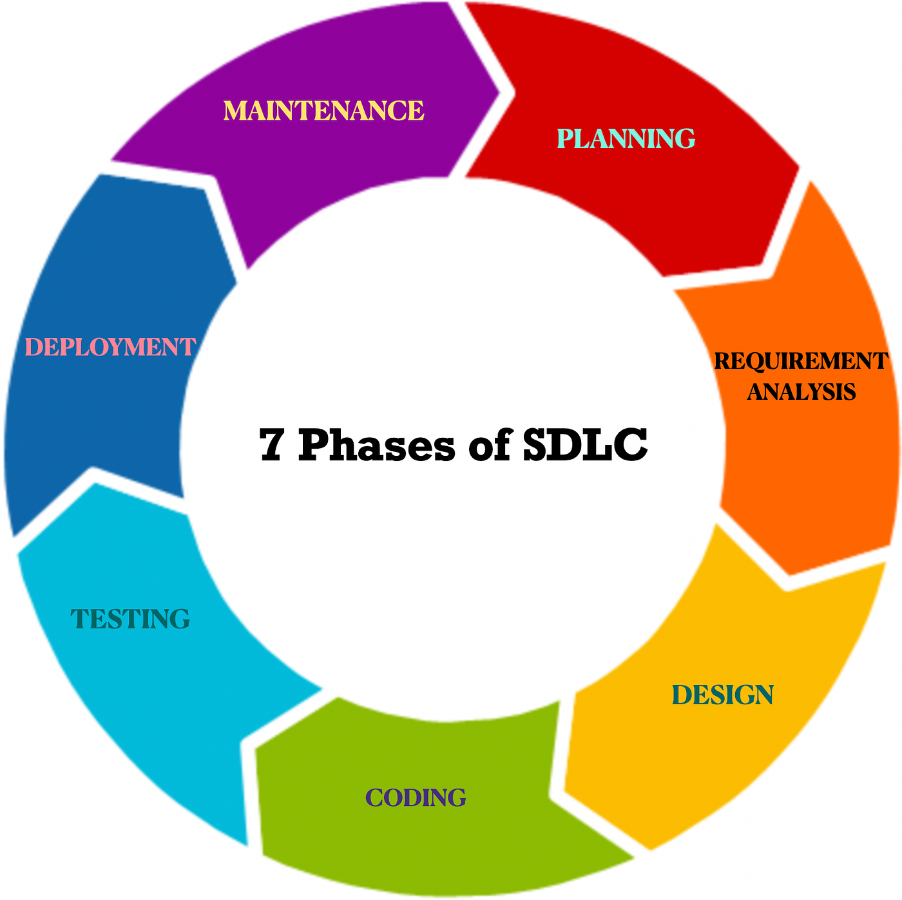

SDLC Phases
The SDLC phases are the steps used to build software in an organized way. These phases include planning, analysis, design, implementation, testing, deployment, and maintenance.
Each phase helps guide the project from the initial idea to the final product.
By following these phases, teams can reduce mistakes, manage complexity, communicate clearly, and make sure the software meets user needs before and after release.

Key Phases of SDLC
The SDLC consists of several phases, including:
Planning
Planning is where the team defines the projects' purpose, goals, timeline, budget, and resources. This phase helps determine whether the project is realistic and worth completing.
Analysis
Analysis focuses on understanding what the users and business need from the software. The team gathers requirements, identifies problems, and decides what the system should be able to do.
Design
Design is where the team plans how the software will look and work. This can include the system layout, user interface, database structure, and overall architecture.
Coding
Coding is the phase where developers write the actual code for the software. The design is turned into a working program or application.
Testing
Testing checks the software for errors, bugs, and issues before it is released. This phase helps make sure the software works correctly and meets the requirements.
Deployment
Deployment is when the finished software is released for users to access. This may involve installing the software, launching it online, or making it available to the organization.
Maintenance
Maintenance happens after the software has been released. The team fixes bugs, updates features, improves performance, and makes sure the software continues to meet user needs.
Each phase has specific objectives and deliverables that contribute to the overall success of the software development project.